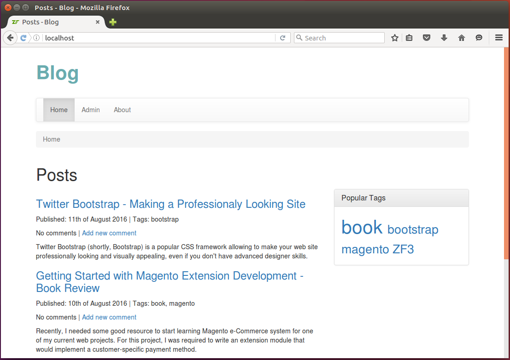

12.1. Get Blog Example from GitHub
For demonstration of Doctrine ORM usage, in this chapter, we will create a real-life Blog website that does the following:
- Stores blog posts in a database and provides user interface for accessing and managing those posts.
- It is assumed that the blog has the single author of its posts, while comments can be added by multiple blog readers.
- The website has two pages: Home page and Admin page. The first one displays the list of recently added posts, while the latter one allows to add, edit, view and delete posts.
For example screen shots of the Blog website, please look at the figures 12.1 and 12.2 below:
 Figure 12.1. Blog home page
 Figure 12.2. Blog admin page
Figure 12.2. Blog admin page
To download the Blog application, visit this page and click the Clone or Download button to download the code as a ZIP archive. When download is complete, unpack the archive to some directory.
Then navigate to the blog directory containing the
source code of the Blog web application:
/using-zf3-book-samples
/blog
...
The Blog is a sample website which can be installed on your machine. To install the sample, you can either edit your default Apache virtual host file or create a new one. After editing the file, restart the Apache HTTP Server and open the website in your web browser.
For the Blog sample to work, you have to create a MySQL database. Instructions on how to do that are provided in the next section.